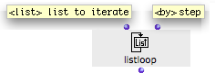
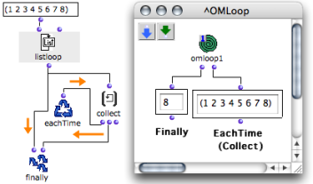
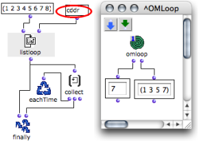
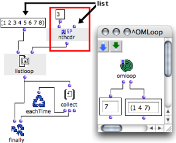

OpenMusic DocumentationHiérarchie de section : OM 6.6 User Manual > Visual Programming II > Iterations: OMLoop > Iterators > List Loop
OpenMusic DocumentationHiérarchie de section : OM 6.6 User Manual > Visual Programming II > Iterations: OMLoop > Iterators > List Loop
Navigation : page précédente | page suivante
Attention, votre navigateur ne supporte pas le javascript ou celui-ci à été désactivé. Certaines fonctionnalités de ce guide sont restreintes.
ListLoop : Enumerating the Elements of a List
General Properties
Listloop enumerates and returns the elements of a list one by one.
In other words, at each step of the iteration, listloop takes a smaller chunk of the list, and returns its first element. The execution ends once the list is exhausted.

|
Listloop has one default input and one optional input :
|
Here, listloop enumerates a list and returns its items one by one.
At each step of the loop, EachtTime evaluates collect.
Collect stores the items of the list.
- The first input of Finally returns the last value of the iteration.
- Its second input returns the result of collect.

"By" : Changing Enumeration Modalities
"By"
The default value of the " by " optional input is a cdr[1] .
This means that, at each loop, listloop returns :
the first element of the list,
and then, the first element of the remaining chunk,
and so on.
In Lisp, this means that listloop returns successive cadrs[1] .
"By" can be replaced by another function meant to return a smaller chunk of a list, such as : cddr [1] or nthcdr for instance.
It can be either a function box on "lambda" mode, or a function name.
Examples : Selecting Items to Return

|
If "by" is a cddr, listloop returns
|
If "by" is an nthcdr, listloop returns
|

|
Choosing the Right Function
Applying an irrelevant "by" argument to listloop may prevent the list from being exhausted. In this case, if no other iterator is present, the loop may go on for infinite iterations.
Références :
CAR, CDR, CADR, CDDR, CADDR...
Elementary Lisp functions, allowing the access to one or more elements in a list.
Lisp fonctions are actually linked list. Lists are actually "conses" (or "pairs") made of a first element and a pointer to the rest (or "tail") of the list (another cons). These two parts of the list are accessed with the CAR and CDR functions, respectively.
Let the following list be : (A B C D).
CAR (A B C D) = A.
CDR (A B C D) = (B C D).
CDR (B) => NIL [this list has no CDR]
"CAR" and "CDR" are technical terms which originally refer to the way data is handled by the computer. CAR is the acronym of "Contents of the Address part of Register number". CDR is the acronym of "Contents of the Decrement part of Register number".
The rest of the functions below are built upon these two kernel accessors.
CADR (A B C D) = B. CADR means CAR of the CDR.
CDDR (A B C D) = (C D). CDDR means CDR of the CDR.
CADDR (A B C D) = C. CADDR means CAR of the CDDR.
NTHCDR (A B C D) = NTH CDR of the list – N must be specified as argument. NTHCDR 3 (A B C D) = (D).
And so on...
Plan :
Navigation : page précédente | page suivante
A propos...(c) Ircam - Centre Pompidou